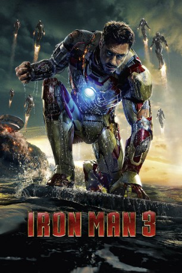

 
 IMDB-Wertung: 7.2 / 10
IMDB-Wertung: 7.2 / 10  Metascore:
Metascore: 
Die Dellen, die sich Iron Man im Kampf gegen seine Widersacher Justin Hammer und Ivan Vanko zugezogen hatte, sind kaum ausgebeult, da droht neue Gefahr. Ein streng geheimes Serum, welches Extremis genannt wird und auf Nanotechnologie basiert, ermöglicht es den mit dem Serum injizierten Menschen, ungeahnte Kräfte zu entwickeln, allerdings mit einer Tendenz zu ungezügelter Aggressivität. Aldrichs Kollegin Maya Hansen, baut auf die Hilfe von Visionär Tony Stark. Währendessen bedroht eine dunkle Macht in Gestalt von The Mandarin die Welt und möchte dem Wettrüsten ein Ende zu seinen Gunsten setzen. Dabei verübt er einen Anschlag auf die amerikanische Regierung und dessen Präsidenten, sowie auf die Air Force, bei der Tony Starks Freund Rhodey dient. Als ein Anschlag auf Tony Starks Eigenheim folgt, geraten er und Pepper Potts in große Gefahr…
Jahr: 2013
Dauer: 130 Minuten
FSK: 12
Land: USA Studio: Walt Disney Studios Motion PicturesTonspuren: DTS - ,
Untertitel: Deutsch,
Auflösung: 1080p (1920x800) Größe: 6604 MB
Genre: Action, Sci-Fi, Abenteuer
Regisseur: Shane Black
Drehbuch: Drew Pearce, Shane Black, Stan Lee, Don Heck, Larry Lieber
Soundtrack: Brian Tyler
Darsteller:
 Robert Downey Jr. als Tony Stark
Robert Downey Jr. als Tony Stark Gwyneth Paltrow als Pepper Potts
Gwyneth Paltrow als Pepper Potts Don Cheadle als Colonel James Rhodes
Don Cheadle als Colonel James Rhodes Guy Pearce als Aldrich Killian
Guy Pearce als Aldrich Killian Rebecca Hall als Maya Hansen
Rebecca Hall als Maya Hansen Jon Favreau als Happy Hogan
Jon Favreau als Happy Hogan Ben Kingsley als Trevor Slattery
Ben Kingsley als Trevor Slattery James Badge Dale als Savin
James Badge Dale als Savin Stephanie Szostak als Brandt
Stephanie Szostak als Brandt Paul Bettany als Jarvis
Paul Bettany als Jarvis William Sadler als President Ellis
William Sadler als President Ellis Dale Dickey als Mrs. Davis
Dale Dickey als Mrs. Davis Ty Simpkins als Harley Keener
Ty Simpkins als Harley Keener Miguel Ferrer als Vice President Rodriguez
Miguel Ferrer als Vice President Rodriguez Xueqi Wang als Doctor Wu
Xueqi Wang als Doctor Wu Shaun Toub als Ho Yinsen
Shaun Toub als Ho Yinsen Pat Kiernan als Pat Kiernan
Pat Kiernan als Pat Kiernan Bill Maher als Bill Maher
Bill Maher als Bill Maher Joan Rivers als Joan Rivers
Joan Rivers als Joan Rivers Ashley Hamilton als Taggart
Ashley Hamilton als Taggart Brooke Jaye Taylor als Happy's Nurse
Brooke Jaye Taylor als Happy's Nurse Anthony Reynolds als Helicopter Pilot #1
Anthony Reynolds als Helicopter Pilot #1 Kendrick Cross als Helicopter Pilot #2
Kendrick Cross als Helicopter Pilot #2 John Eddins als Mandarin Look-Out
John Eddins als Mandarin Look-Out Jan Broberg als Senior Technician
Jan Broberg als Senior Technician Nate Bynum als Technical Director
Nate Bynum als Technical Director Tom Virtue als Thomas Richards
Tom Virtue als Thomas Richards Yvonne Zima als Miss Elk Ridge
Yvonne Zima als Miss Elk Ridge Stan Lee als Pageant Judge
Stan Lee als Pageant Judge Adam Pally als Gary the Cameraman
Adam Pally als Gary the Cameraman Rebecca Mader als Sweat Shop Agent
Rebecca Mader als Sweat Shop AgentDatei: X:\Comic-Filme\Iron Man\Iron Man 3 (2013, FSK12, 1920x800) 3D.mkv seit 25.11.2015
Festplatte: Comicverfilmungen+MusikCD
 Es gibt insgesamt 7 Filme in der Gruppe 'Comic-Filme\Iron Man'
Es gibt insgesamt 7 Filme in der Gruppe 'Comic-Filme\Iron Man'